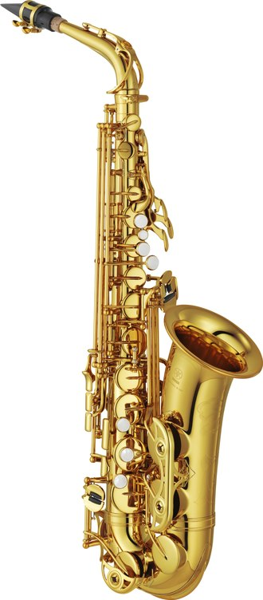
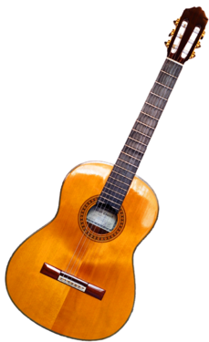
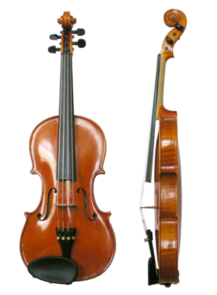
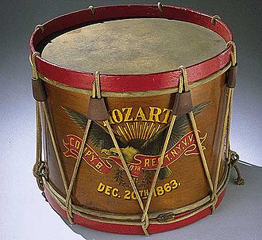

- The saxophone (often referred to colloquially as the sax) is a type of single-reed woodwind instrument with a conical body, usually made of brass. As with all single-reed instruments, sound is produced when a reed on a mouthpiece vibrates to produce a sound wave inside the instrument's body

- The guitar is a fretted musical instrument that typically has six strings. It is usually held flat against the player's body and played by strumming or plucking the strings with the dominant hand, while simultaneously pressing selected strings against frets with the fingers of the opposite hand

- The violin, sometimes known as a fiddle, is a wooden chordophone (string instrument) in the violin family. Most violins have a hollow wooden body. It is the smallest and thus highest-pitched instrument (soprano) in the family in regular use

- The drum is a member of the percussion group of musical instruments. In the Hornbostel-Sachs classification system, it is a membranophone.